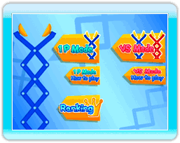

Press  and
and  simultaneously to proceed from the title screen to the menu.
simultaneously to proceed from the title screen to the menu.
● Main Menu
Use the Wii Remote to move the cursor, then press to make your selection.
1P Mode
(see page 8) |
Challenge yourself to earn points and top your high score in 1P Mode! |
1P Mode
How to Play |
Learn the rules for 1P Mode. |
VS Mode
(see page 8) |
Play against a friend and see who gets the most points in VS Mode! This mode requires two Wii Remotes and two Nunchuks. |
VS Mode
How to Play |
Learn the rules for VS Mode. |
Ranking
(see page 10) |
Check your score rankings from 1P Mode. |